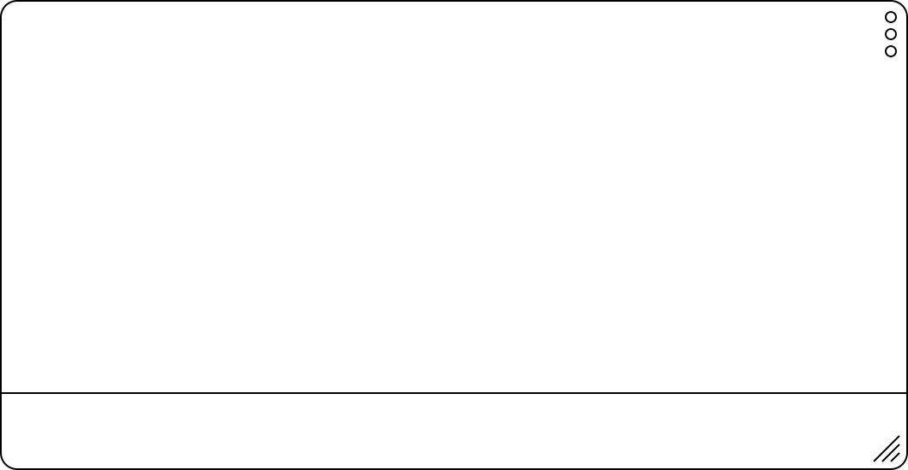
Riottosa Regular Condensed Riottosa Bold Condensed Riottosa Regular Wide Riottosa Bold Wide
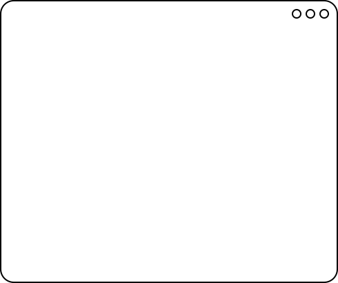
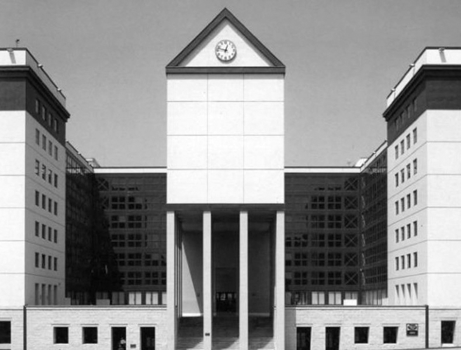
Riottosa IS An Open
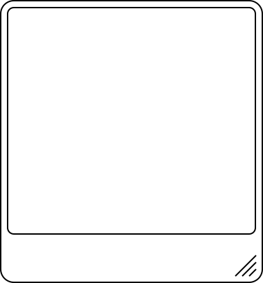
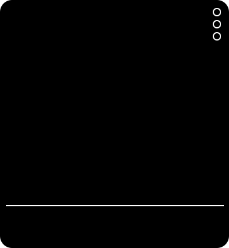
anger
— is a
(gift).
1893
1962
2017
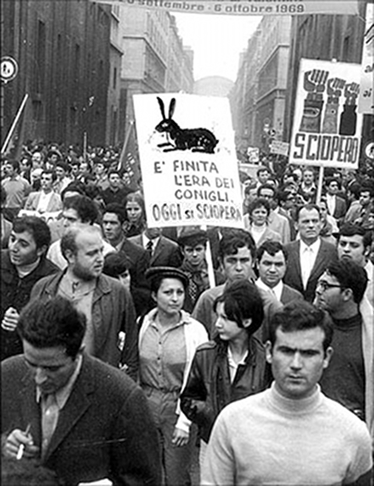
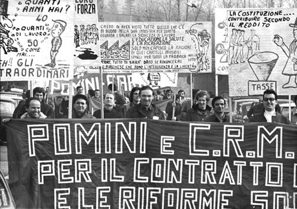
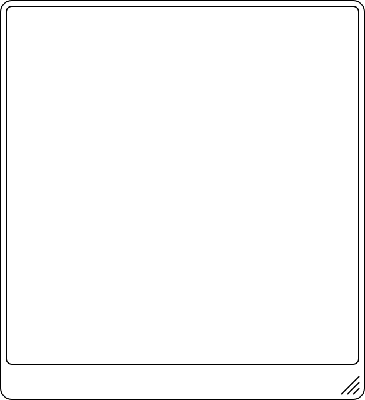
{LUCHA}
[BRUCIA]
(WOW)
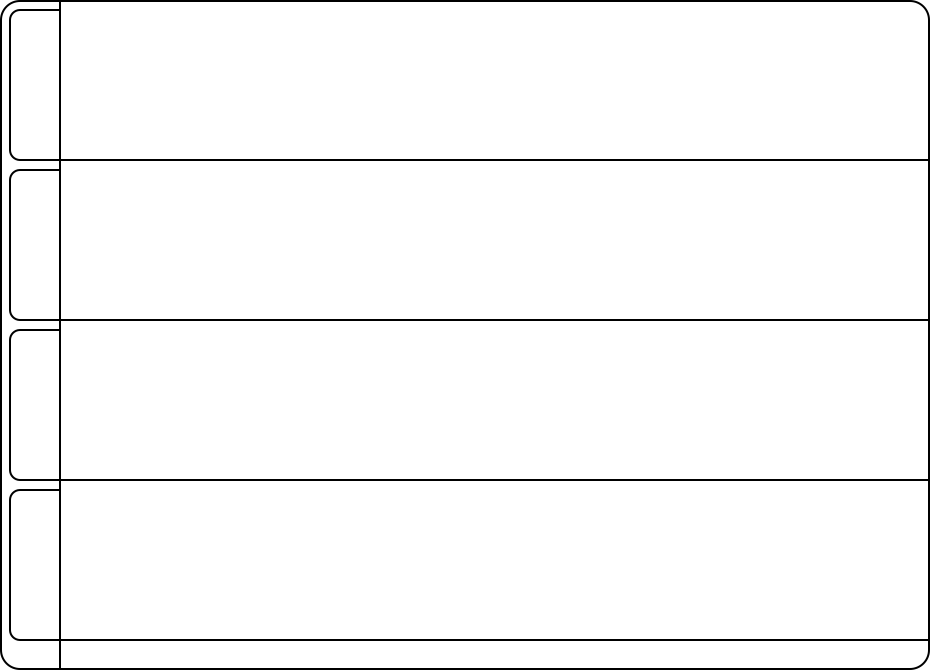
- POLITICO
- InCLuSIVITà
- SInDaCATO
- ANTIFASCISMO
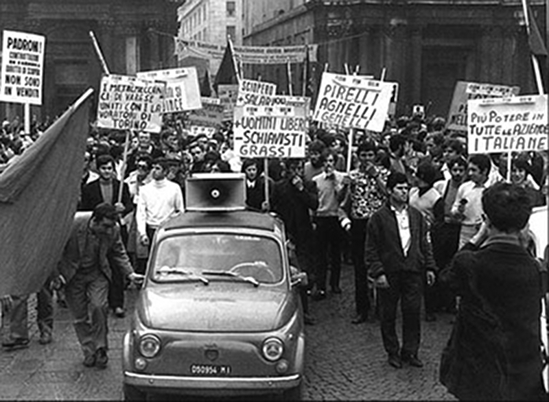
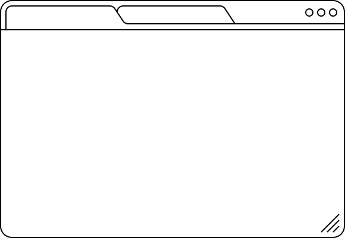
SABOTAGE
Le sabotage est l'action de détériorer, mettre hors d’usage volontairement et le plus souvent clandestinement, du matériel, des machines, des installations militaires ou civiles, ou de désorganiser et de compromettre le succès d'un projet, d'une puissance politique ou d'une entreprise.
Per non dimenticarlo
DOWNLOAD
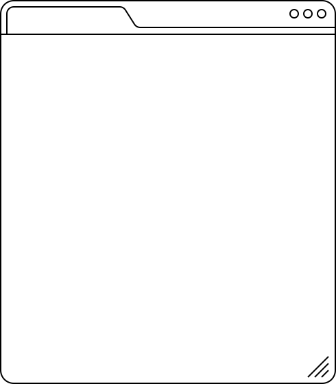
FoRtIsSiMo FrEnEtIc VeGeTaRiAn WeLcOmE ViEwPoInTs PoLiTiCs
Solidarität, Selbstverwaltung und gegenseitige Hilfe bilden das Fundament einer gerechteren Gemeinschaft. Wir sind überzeugt, dass das Teilen von Wissen, Werkzeugen und Ressourcen neue Formen der Zusammenarbeit schaffen kann, in denen alle mitwirken, ihren Beitrag leisten und den Wandel gemeinsam gestalten.
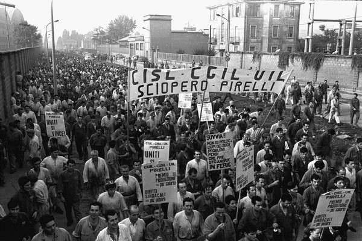
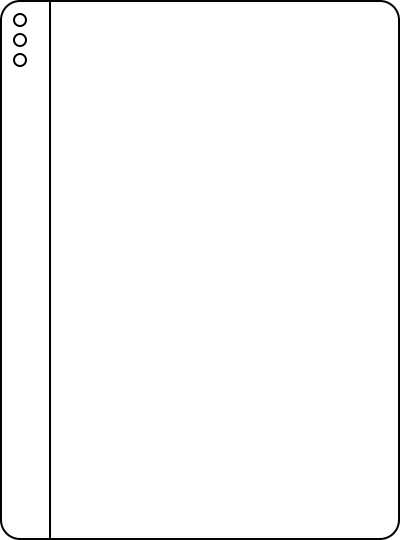
CaSuAl Slogan DePrIvEd Outcasts SuStAiNiNg Guerrillas CaPaBlE ReStArT